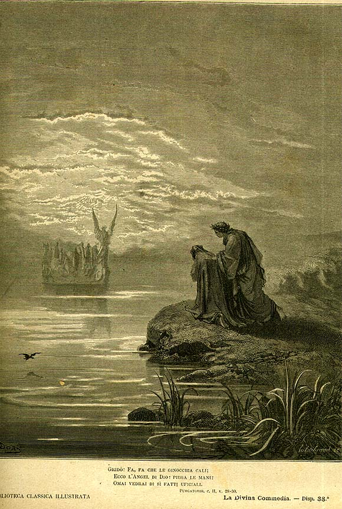

Песнь 2 из 33
Ангел-кормчий. Песнь Каселлы

Кратко
Восходит солнце. По морю стремительно приближается ладья, которой правит ангел: он привозит к горе души умерших, поющих псалом «In exitu Israel de Aegypto». Среди них Данте узнаёт друга — музыканта Каселлу. По просьбе Данте тот запевает его же канцону «Amor che ne la mente mi ragiona», и все заслушиваются. Но появляется Катон и сурово бранит души за промедление: не время услаждаться, надо спешить к очищению.
Главные моменты
- Ангел-кормчий вместо адского Харона — благой «перевозчик душ».
- Души поют псалом об исходе из Египта (образ освобождения от греха).
- Встреча с другом-музыкантом Каселлой, тёплая и человечная.
- Сладость песни захватывает всех — и тут же окрик Катона: долг выше услады.
Значение
Тема искусства и его соблазна: красота песни не должна отвлекать от восхождения.